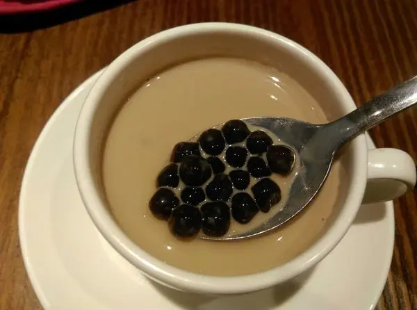
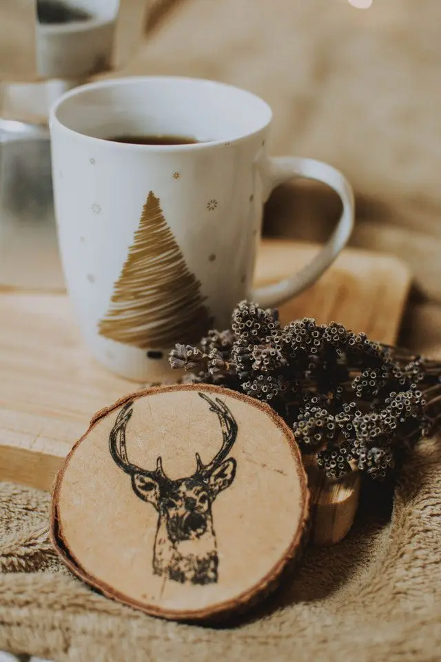
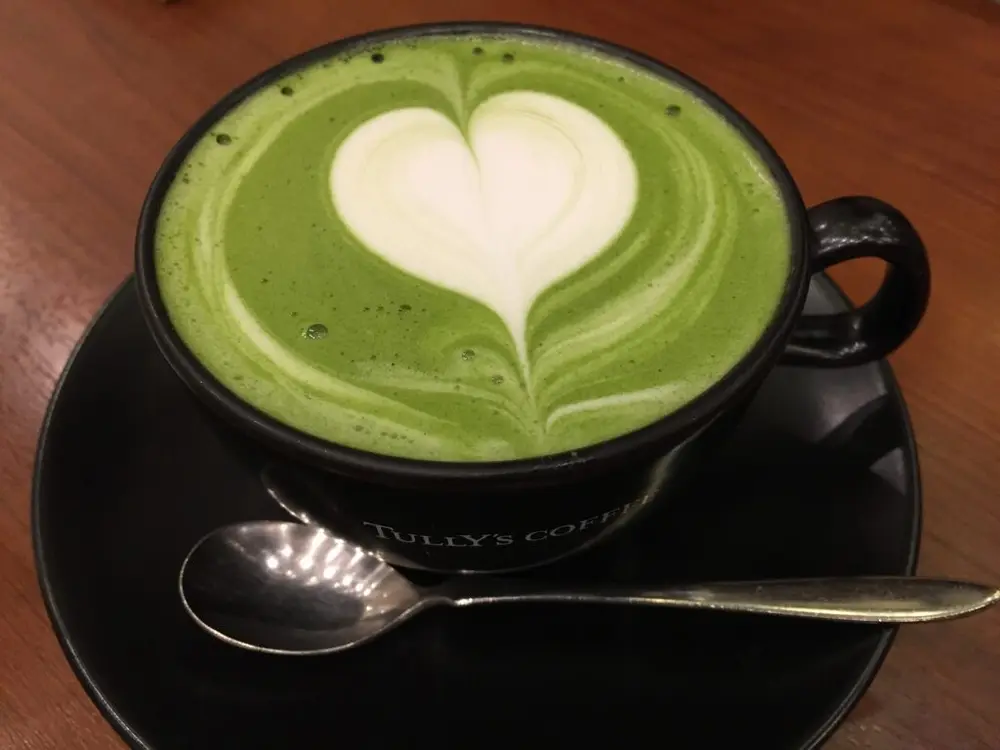

Articles / Tips & trends
Wintery bubble tea
2019-12-13 · Tips and Trivia

Break out your scarves and sweaters – it’s winter time!
Nothing warms you up from head to toe more than a piping-hot drink. Tea, chocolate, coffee…everyone has their favourites. What about bubble tea?
While bubble tea is the reigning king of summertime, that doesn’t mean you can’t enjoy some chewy tapioca during winter!.
Wrap yourself up and grab a mug, it’s time for some wintery bubble tea!
Hot bubble milk tea
Let’s start off with the classic Taiwanese milk tea! Taiwan’s winters may not be as cold as say in Japan or South Korea, but the northerly winds still pack a punch!
Some bubble tea shops in Taiwan offer their drinks both cold and warm, and milk tea is of course on the menu.
Worried that your drink will go cold in minutes? Some tea houses serve their hot bubble milk tea in teapots, keeping your brew nice and warm.


Hot chocolate
What combinations comes to mind when you think of hot chocolate? Marshmallows? Peppermint? Caramel? Cinnamon? Why not add some tapioca pearls? The idea may sound crazy to you but it works!
With the rich, thick hot chocolate mingling with the brown sugar from the tapioca pearls, this bobalicious spin on a popular winter drink will leave you craving for more. Of course, nobody’s stopping you from mixing and matching with the more classic additions. Tapioca and cinnamon? Sure why not?
Aside from hot cocoa, chocolate-flavoured milk or just plain ol’ hot milk works just as well. Don’t forget to leave a mug out for Santa!
Hot matcha bubble milk tea
Matcha milk tea, matcha au lait, matcha lattes….so many names, so little time. Speaks volumes about how much matcha and milk is a perfect match, doesn’t it?
Spoon some tapioca pearls into a creamy, foamy cup of hot matcha milk tea, then let the brown sugar do its job. Want something more? Throw in some red beans!
Give yourself a foam mustache, or snap up a photo of cute, gorgeous latte art!

Whether in the sweltering summer heat or in the harsh cold winter, boba tea is still here to stay!